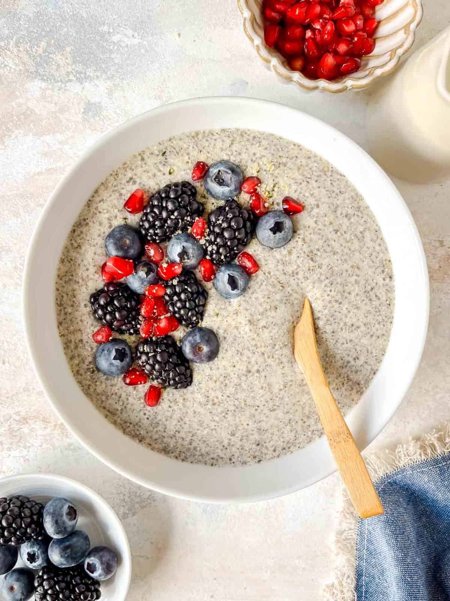

Chia Pudding

Start your day with a powerhouse of nutrition that tastes like a treat! This Hemp Chia Pudding is the ultimate healthy breakfast, packed with plant-based protein, fiber, and Omega-3s. We combine the gelling magic of chia seeds with the creamy, nutty flavor of hemp hearts to create a pudding that's as satisfying as it is energizing. It's a simple, make-ahead meal that will keep you full, focused, and ready to take on your day.
Ingredients
- 1 cup non-dairy milk
- 3 tablespoon chia seeds
- 1 hulled hemp seeds
- 1 teaspoon maple syrup
Optional add-in
- ½ teaspoon vanilla extract
Instructions
- Add the plant milk of choice to a blender cup, then tip in chia seeds, hemp seeds, cardamom and maple syrup. Blend until combined.
- Pour the chia hemp mixture into a tupperware or container that can be sealed and set aside in the fridge for 1-2 hours. Stir, if you can, after 30 minutes.
- Spoon into your serving bowl and add any toppings you like.
Notes
- Pour the milk into the blender cup first, or I find that the seeds and maple syrup stick to the bottom of the cup.
- Add more spice and maple syrup to taste preference.
- For a much thicker pudding, add an extra tablespoon of chia seeds.
Home